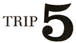

This Mysteree Rite is not required for initiation, but it is offered by many POEE Priests to proselytes who desire a formal ceremony.
1) The Priests and four Kin are arranged in a pentagon with the Initiate in the center facing the Priests. If possible, the Kin on the immediate right and left of the Priest should be Deacons. The Initiate must be totally naked, to demonstrate that they are truly a human being and not something else in disguise like a cabbage or something.
2) All persons in the audience and the pentagon, excepting the Priest, assume a squatting position and return to a standing position. This is repeated four more times. This dance is symbolic of the humility of we Erisians.
3) The Priest begins:
I, (complete Holy Name, with Mystical Titles, and degrees, designations, offices, etc.), Ordained Priest of the Paratheo-anametamystikhood of Eris Esoteric, with the Authority invested at me by the High Priest of It, Office of the Polyfounder, The House of the Rising Podge, POEE Head Temple; Do herewith Require of Ye:
1) ARE YE A HUMAN BEING AND NOT A CABBAGE OR SOMETHING? The Initiate answers YES.
2) THAT'S TOO BAD. DO YE WISH TO BETTER THYSELF? The Initiate answers YES.
3) HOW STUPID. ARE YE WILLING TO BECOME PHILOSOPHICALLY ILLUMINIZED? He answers YES.
4) VERY FUNNY. WILL YE DEDICATE YESELF TO THE HOLEY ERISIAN MOVEMENT? The Initiate answers PROBABLY.